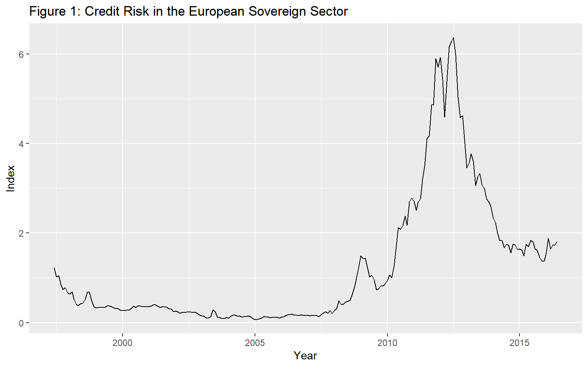

vignettes/illustrationBONDS.Rmd
illustrationBONDS.RmdAbstract
In this tutorial we illustrate the effectiveness of the PSY procedure in detecting crisis with an applications to theThe European Sovereign Sector using R and the psymonitor package.Before beginning the tutorial, make sure that you have all the necessary packages. Try running the cell below and, if any issues arise, follow the instructions within.
knitr::opts_chunk$set(echo = TRUE, warning = FALSE,
message = FALSE, comment = NA)
# CRAN Packages
# -------------
# If any of these packages are not installed, write
# install.packages("<name of package>")
# e.g., install.packages("MultipleBubbles")
library(psymonitor) # For testting for bubble monitoring
library(ggfortify) # For time-series plotsThe European sovereign debt sector experienced an extremely turbulent period over the last decade, which caused significant harm to the real economy (Acharya et al., 2018) and led to an unprecedented level of unemployment (Karafolas and Alexandrakis, 2015). The PSY detection algorithm can serve as a useful early warning mechanism for escalating credit risk, which is acknowledged as a leading indicator of financial and economic crises, and thereby enable timely policy action and effective risk management to avert more serious economic damage. To show the potential efficacy of this early warning system, we conduct a pseudo monitoring exercise of credit risk in the European sovereign sector.
Credit risk in the European sovereign sector is proxied by an index constructed as a GDP weighted 10-year government bond yield of the GIIPS (Spain, Ireland, Italy, Greece, and Portugal) countries.5 The PSY strategy is applied to the spread between the GIIPS bond yield index and the 10-year government bond yield of Germany (used as a proxy for a prevailing benchmark of economic fundamentals). The sample data runs from June 1997 to June 2016 and was downloaded from Datastream International. The GDP data are downloaded quarterly and converted to a monthly frequency by assuming a constant value within each quarter.
Figure 3 plots the bond yield spread over the sample period. The bond yield index experienced a rapid and substantial rise between 2008-2009. It continued to mount to historical highs from 2010 onwards and peaked in June 2012. The bond yield index has dropped since then and becomes relatively stable over the last two years. The codes for implementing the PSY procedure are identical to those for Example 1. The estimated start and end dates of the crisis episodes are displayed below.

The shaded areas in Figure 3 are the identified periods of crisis obtained using the 95% bootstrap critical values. The first alarm signal of risk appeared in March 2008 and lasts for one month. The alarm was triggered again after the collapse of Lehman Brothers in October 2008 and turns off in March 2009. The stress indicator switched on again in May 2010 and lasted until August 2012.
Figure 3: Crisis episodes in the European sovereign sector. The solid line is the 10-year government bond yield spread between the PIIGS countries and Germany and the shaded areas are the periods where the PSY statistic exceeds its 95% bootstrap critical value.